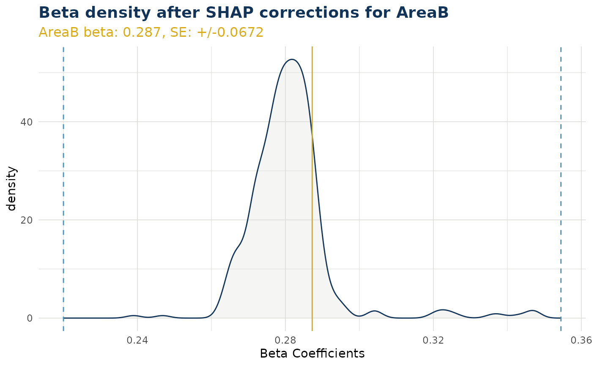
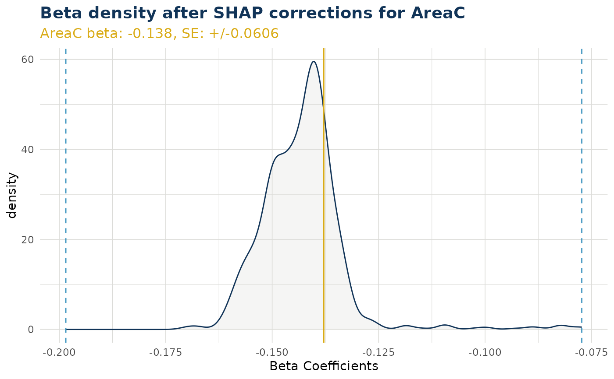
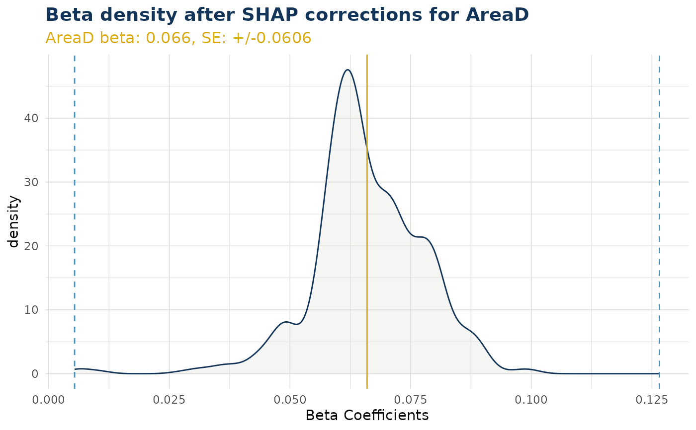
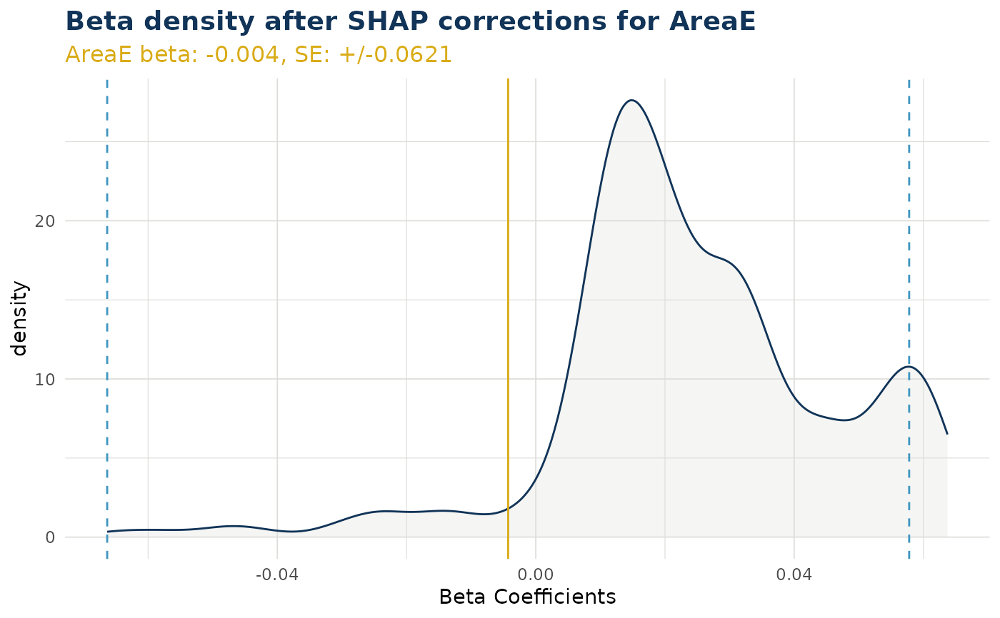
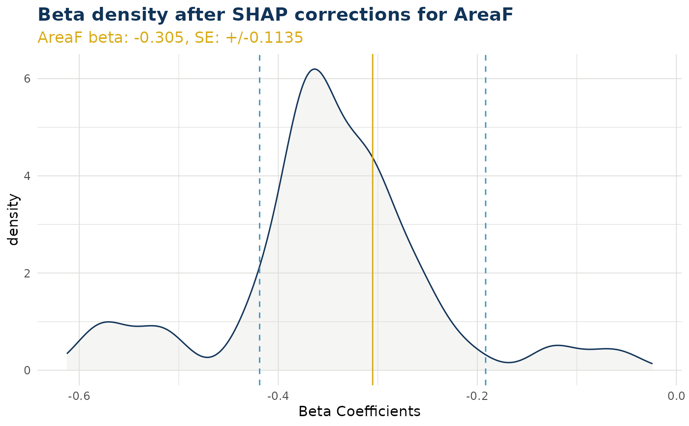
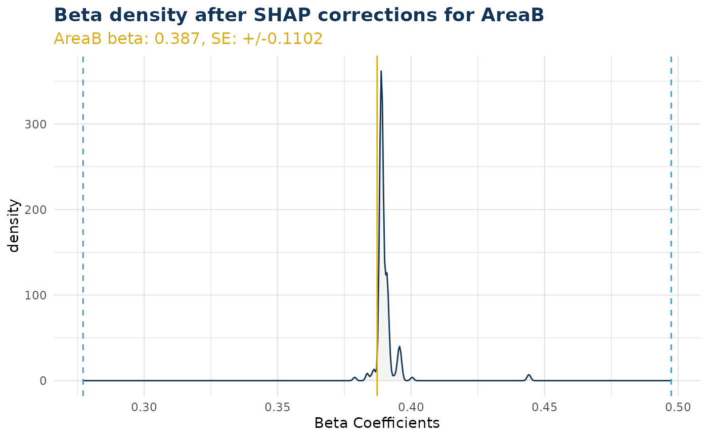
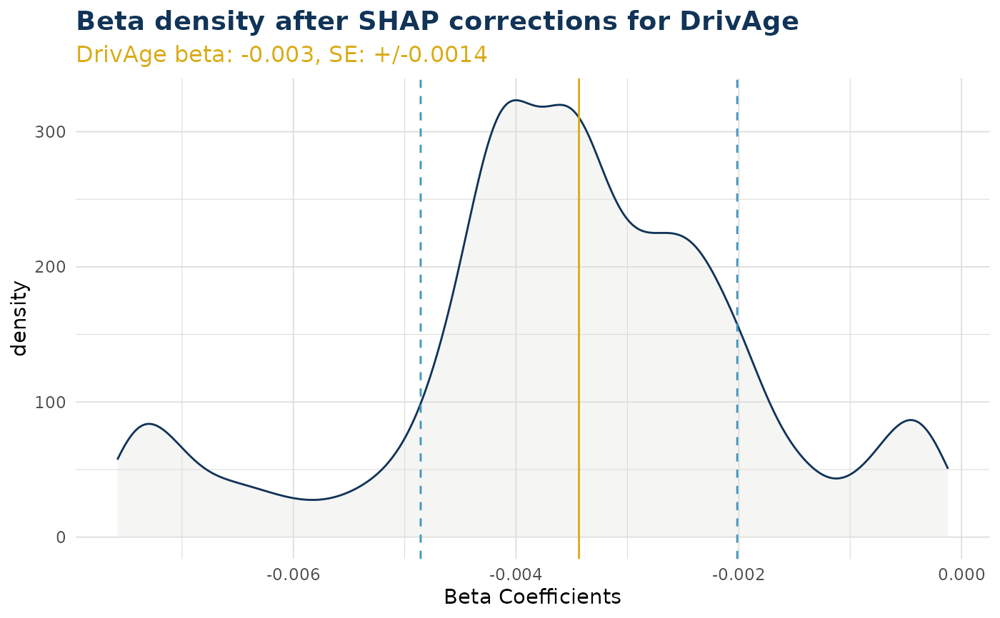

Density Plot of Beta Corrections for a Variable
Source:R/create_beta_correction_plot_functions.R
beta_corrected_density.RdGenerates a density plot showing the distribution of corrected Beta values to a GLM coefficient, along with the original Beta coefficient, and standard error bounds around it.
NOTE This function signature documents the interface of functions created by create_beta_corrected_density.
Arguments
- varname
Character string specifying the variable name OR coefficient name is accepted as well.
- q
Number, must be between 0 and 0.5. Determines the quantile range of the plot (i.e. value of 0.05 will only show shaps within 5pct –> 95pct quantile range for plot)
- type
Character string, must be "kde" or "hist"
Value
ggplot object(s) showing the density distribution of corrected beta coefficients with vertical lines indicating the original coefficient value and standard error bounds.
The item returned will be:
single ggplot object when `varname` was a numerical variable OR a coefficient name
list of ggplot objects when `varname` was a categorical variable
Details
The plot shows:
Density curve of corrected coefficient values
Solid vertical line at the original GLM coefficient
Dashed lines at plus/minus 1 standard error from the coefficient
Automatic x-axis limits that cut off the highest and lowest q pct. If you want axis unaltered, set q = 0
Examples
# This function is created inside explain_iblm() and is output as an item
df_list <- freMTPLmini |> split_into_train_validate_test(seed = 9000)
iblm_model <- train_iblm_xgb(
df_list,
response_var = "ClaimRate",
family = "poisson"
)
explain_objects <- explain_iblm(iblm_model, df_list$test)
# plot can be for a categorical variable (produces list of plots, one for each level)
explain_objects$beta_corrected_density(varname = "Area")
#> $AreaB

#>
#> $AreaC

#>
#> $AreaD

#>
#> $AreaE

#>
#> $AreaF

#>
# plot can be for a single categorical level
explain_objects$beta_corrected_density(varname = "AreaB")

# output can be numerical variable
explain_objects$beta_corrected_density(varname = "DrivAge")

# This function must be created, and cannot be called directly from the package
try(
beta_corrected_density(varname = "DrivAge")
)
#> Error in beta_corrected_density(varname = "DrivAge") :
#> This function documents the interface only and cannot be called
#> directly. Instead, try one of the following
#> ℹ Use explain_iblm()$beta_corrected_density()
#> ℹ Call a function output from create_beta_corrected_density()